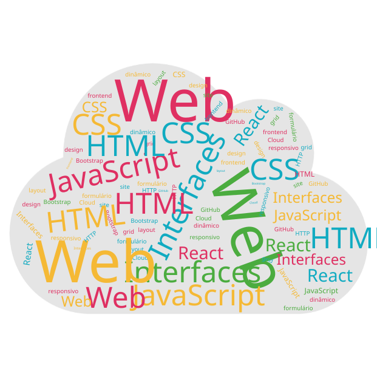

Lab1
A minha primeira página Web.
Lab1A minha primeira página Web.
Lab1Exercícios de HTML e CSS.
Abrir Lab2Menu das cidades.
Abrir Lab3Eis a minha primeira página Web!
Na unidade curricular de Desenvolvimento de Interfaces Web abordaremos as seguintes tecnologias Web 🌐 :
Iremos criar soluções criativas!
